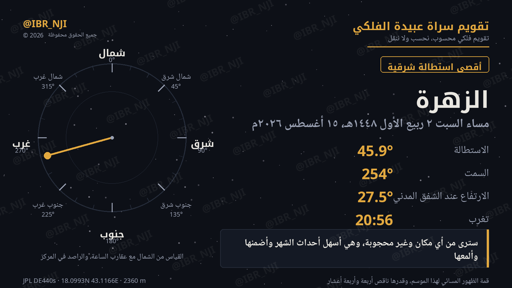

سترى من أي مكان وغير محجوبة، وهي أسهل أحداث الشهر وأضمنها وألمعها.
قمة الظهور المسائي لهذا الموسم، وقدرها ناقص أربعة وأربعة أعشار
أسهل أحداث الشهر وأضمنها: ٢٧٫٦° ارتفاعاً وقدر −٤٫٤٣، ألمع جرم في سماء المساء هذا الموسم، يراه كل أحد بلا شرط أفق يُذكر.
